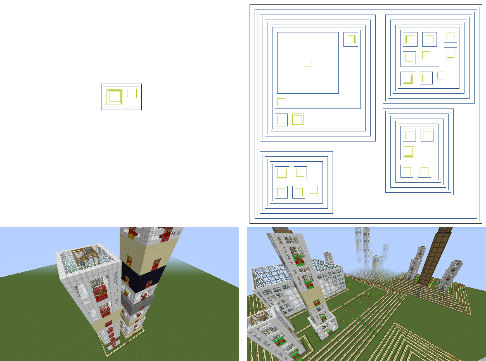

Sourcemeter CDF conversion
This application using sourcemeter as type is used to process the graph file generated by SourceMeter, which creates properties for each item, for exmaple functions that will be processed later by the Mapping Tool.
Usage: java -jar converter.jar -t <tpye> -i <graph file> [-o <output.xml>] [-p <parameter>]
-i: input, the path of the input graph file. Required.-o: output, the path of the output XML file. Optional.-t: type, the type of the conversion, in this case it will be ‘sourcemeter’. Required.-p: parameter, a string value, for example: -p projects=project1,project2. Regex expressions are allowed to use in project names.
As we mentioned, projects can also be defined with regex expression, for example if you would like to convert all projects start with "a" letter, use projects=^a.*. In these expressions comma (,) and equal sign (=) are forbidden. Regular expression special characters must be escaped even if you are providing a simple project name: for example if the project name is "project.java", you should type it projects=project.java.
After executing the tool a Converter output xml will be generated, which contains package, class, attribute, method and constant elements with different properties.
SonarQube CDF conversion
This application using sonarqube as type is used to process one or more projects from a SonarQube server, which creates properties for each item, for exmaple files that will be processed later by the Mapping Tool. The Tool works properly only with 5.3 version of SonarQube.
Usage: java -jar converter.jar -t <tpye> -i <graph file> [-o <output.xml>] [-p <parameter>]
-i: input, the URL of the server.-o: output, the path of the output XML file. Optional.-t: type, the type of the conversion. In this case it will be ‘sonarqube’. Required.-p: parameter, a string value, for example: -p projects=project1,project2. Parameters can be 'username', 'password', 'projets', 'splitDirs'. Regex expressions are allowed to use in project names.
After executing the tool a Converter output xml will be generated, which contains project, directory and file elements.
Parameters
In some cases reaching the SonarQube server requires authentication. The user can parameterize the command giving username and password, for example '-p username=user password=Zt323Kl'.
There is a projects option, where user can define the buildable projects, for example '-p projects=log4j,cm2'. If the user leave this option, all project of the server will be converted. Projects should be given separated by commas.
There is a boolean splitDirs option, which can be given in the -p parameter too. In case of splitDirs=false, the name of the directory will complex, and only one element, for example:
<element name="sources/codemetropolis-toolchain-commons/src/main/java/codemetropolis/toolchain/commons/cmxml" type="dir">
When splitDirs=true, all part of the directory will be a uniq dir element. In the following example there are two different city built from the same project using splitDirs=false and then splitDirs=true.

To build a city with separated directories, the following command should be given to run Converter Tool:
java -jar converter.jar -t sonarqube -i <serverName> -o <outputFilename> -p projects=<projectname> splitDirs=true
About the output XML
The output XML contains the name and the type of the elements and the properties of them.
<element name="void main(String[] args)" type="method">
<children/>
<properties>
<property name="sourceid" type="string" value="L118"/>
<property name="Name" type="string" value="void main(String[] args)"/>
<property name="LongName" type="string" value="URLExpSimple.main([Ljava/lang/String;)V"/>
<property name="CLLC" type="float" value="0.0"/>
<property name="CC" type="float" value="0.0"/>
<property name="CI" type="int" value="0"/>
<property name="CCL" type="int" value="0"/>
<property name="CCO" type="int" value="0"/>
<property name="LLDC" type="float" value="0.0"/>
In the represented XML source a method type element called "void main(String[] args)" with several properties are shown. Every property has a name, a type and a value. Type can be string, float or int.